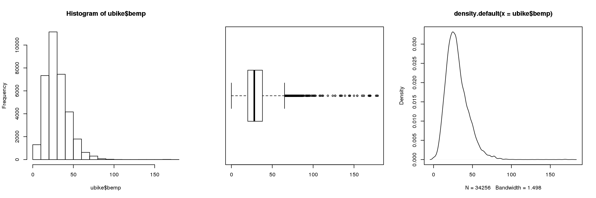
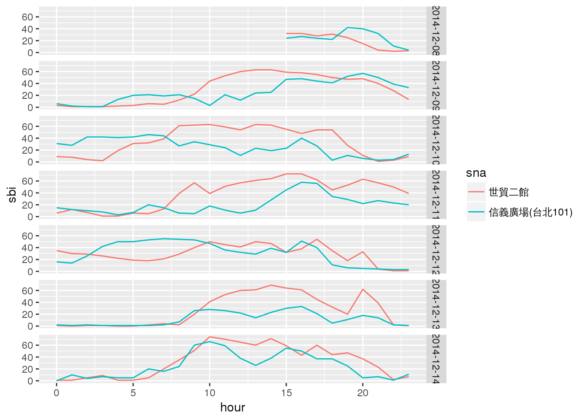
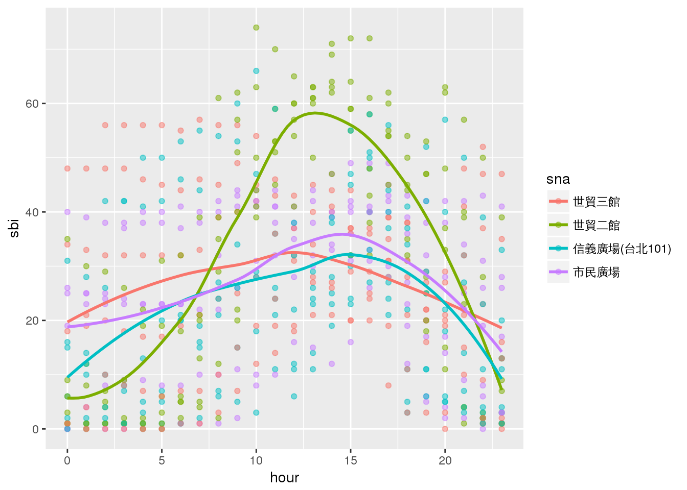
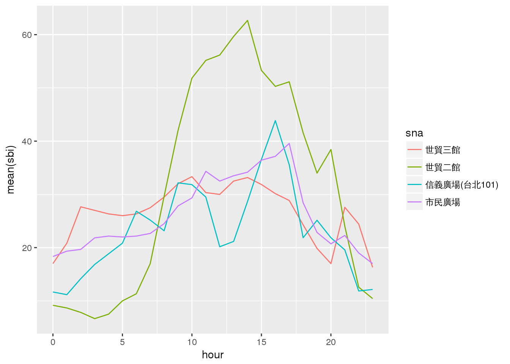
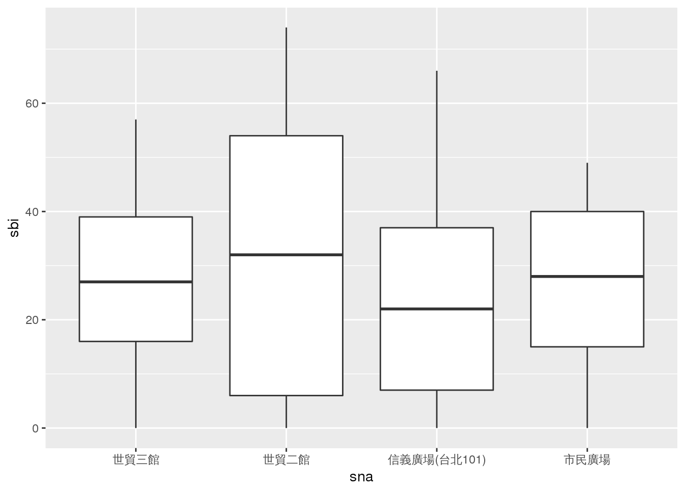
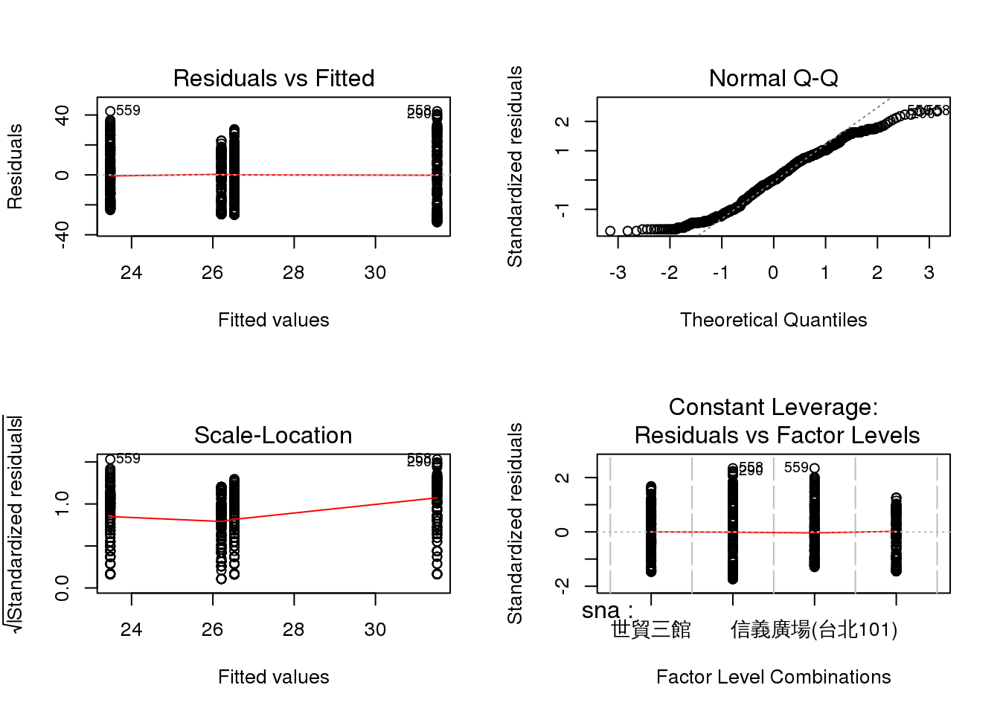
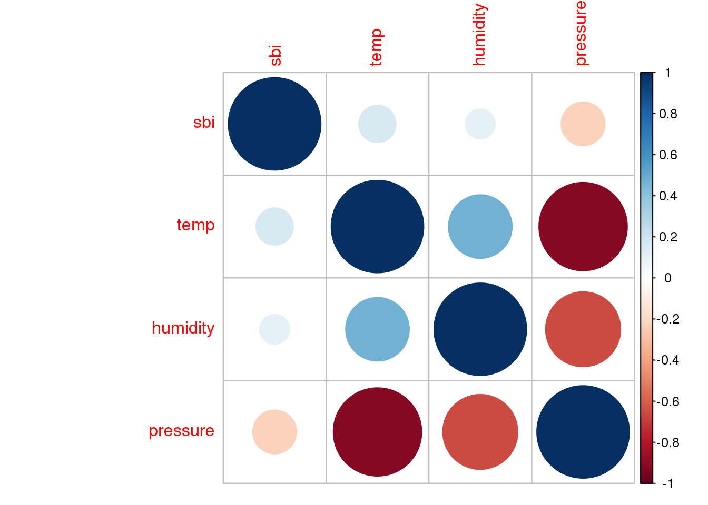
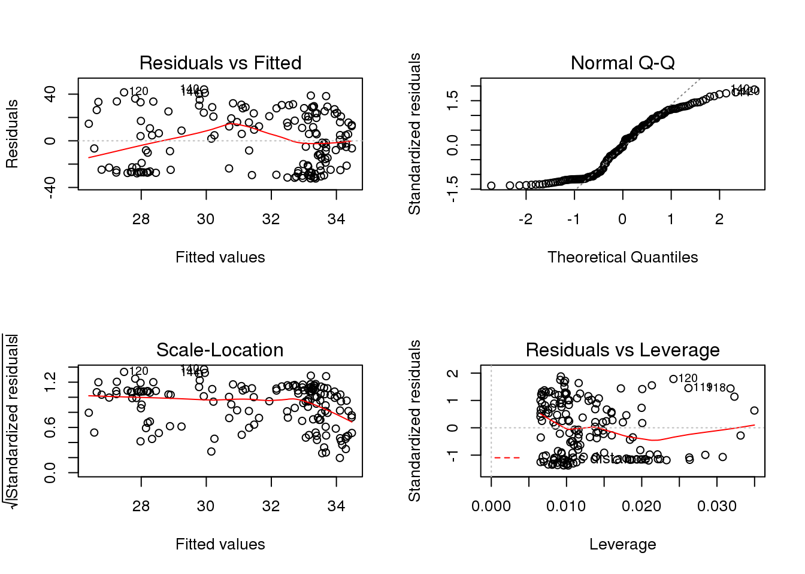
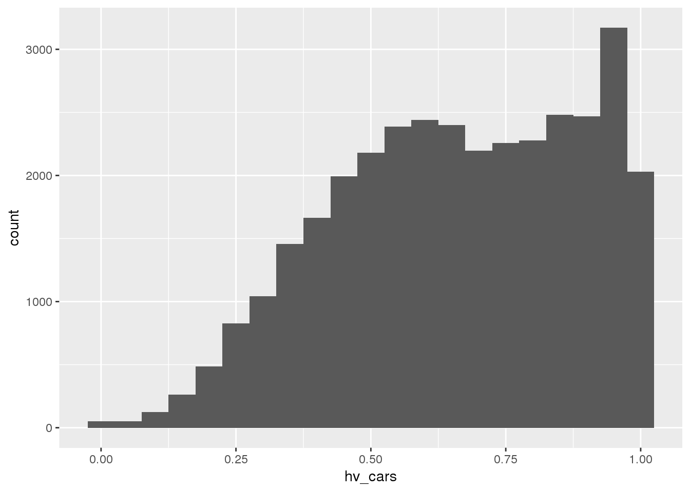

Chapter 8 Elementary Statistics - Quick Review
Rafe C. H. Liu, LastUpdate: 2018-07-18
8.1 Preliminaries
- Necessaries
- Dataset for this tutorial
- aggregate vs disaggregate data
- aggregate level
# import dataset from file
ubike <- read.csv(file = "./data/ubike-weather-big5.csv",
fileEncoding = 'BIG-5',
stringsAsFactors = F)
# A galance of dataset
head(ubike)
tail(ubike)
str(ubike)
summary(ubike)
# basic Extract-Transform-Load process using dplyr
library(dplyr)
ubike <- ubike %>% select(
date, hour, sno, sarea, sna, lat, lng, tot,
sbi = avg.sbi, bemp = avg.bemp,
temp, humidity, pressure
) %>% mutate(
sbi = ceiling(sbi),
bemp = ceiling(bemp),
temp = temp %>% round(digits = 2),
humidity = humidity %>% round(digits = 2),
pressure = pressure %>% round(digits = 2)
)
# check again ==> correct variable types
# str(ubike)
ubike <- ubike %>%
mutate(date = as.Date(date),
sarea = as.factor(sarea))| 欄位名稱 | 代號 | 欄位名稱 | 代號 |
|---|---|---|---|
| 日期 | date | 總停車格 | tot |
| 時間 | hour | 車輛數 | sbi |
| 場站代號 | sno | 空位數 | bemp |
| 場站區域 | sarea | 氣溫 | temp |
| 場站名稱 | sna | 溼度 | humidity |
| 經度 | lat | 氣壓 | pressure |
| 緯度 | lng |
8.2 Descriptive Statistics
summary(ubike) date hour sno sarea sna lat lng tot
Min. :2014-12-08 Min. : 0.00 Min. : 1.0 大安區 : 4276 Y-17青少年育樂中心: 153 Min. :24.97 Min. :121.4 Min. : 24.00
1st Qu.:2014-12-10 1st Qu.: 6.00 1st Qu.: 56.0 信義區 : 3518 三張犁 : 153 1st Qu.:25.03 1st Qu.:121.5 1st Qu.: 36.00
Median :2014-12-11 Median :12.00 Median : 112.0 中山區 : 2902 三民公園 : 153 Median :25.04 Median :121.5 Median : 44.00
Mean :2014-12-11 Mean :11.93 Mean : 266.8 中正區 : 2601 三重商工 : 153 Mean :25.05 Mean :121.5 Mean : 46.29
3rd Qu.:2014-12-13 3rd Qu.:18.00 3rd Qu.: 168.0 松山區 : 2295 三重國民運動中心 : 153 3rd Qu.:25.06 3rd Qu.:121.6 3rd Qu.: 52.00
Max. :2014-12-14 Max. :23.00 Max. :1056.0 北投區 : 1836 (Other) :33443 Max. :25.14 Max. :121.7 Max. :180.00
(Other):16828 NA's : 48
sbi bemp temp humidity pressure
Min. : 0.00 Min. : 0.00 Min. :11.57 Min. :56.62 Min. :1002
1st Qu.: 6.00 1st Qu.: 20.00 1st Qu.:14.51 1st Qu.:72.26 1st Qu.:1018
Median : 14.00 Median : 28.00 Median :16.78 Median :83.82 Median :1021
Mean : 16.14 Mean : 30.31 Mean :16.84 Mean :81.42 Mean :1021
3rd Qu.: 23.00 3rd Qu.: 38.00 3rd Qu.:18.64 3rd Qu.:90.23 3rd Qu.:1024
Max. :160.00 Max. :179.00 Max. :25.34 Max. :97.39 Max. :1033
NA's :4278 NA's :4278 NA's :4278 ubike %>%
group_by(sarea, sna) %>%
summarise(mean(bemp), median(bemp), max(bemp), min(bemp), sd(bemp))# A tibble: 231 x 7
# Groups: sarea [?]
sarea sna `mean(bemp)` `median(bemp)` `max(bemp)` `min(bemp)` `sd(bemp)`
<fct> <fct> <dbl> <dbl> <dbl> <dbl> <dbl>
1 三重區 三重商工 47.6 51.0 62.0 25.0 10.7
2 三重區 三重國民運動中心 31.2 32.0 51.0 0 11.4
3 三重區 捷運三重站(3號出口) 24.8 26.0 33.0 9.00 6.15
4 三重區 明志國中 29.6 29.0 40.0 20.0 5.88
5 三重區 興華公園 26.5 27.0 38.0 10.0 5.79
6 三重區 重陽國小 23.5 23.0 38.0 10.0 5.69
7 中和區 中和公園 31.4 32.0 44.0 10.0 9.48
8 中和區 捷運永安市場站 52.9 53.0 72.0 18.0 13.3
9 中和區 秀山國小 28.5 27.0 59.0 0 13.3
10 中山區 中山行政中心 20.2 20.0 30.0 7.00 6.63
# ... with 221 more rows# Combine plots
par(mfrow=c(1,3)) # plot parameter mfrow: number of Multiple Figures (use ROW-wise).
hist(ubike$bemp) # hist plot
boxplot(ubike$bemp, horizontal = TRUE) # boxplot
plot(density(ubike$bemp)) # kernel density plots
par(mfrow=c(1,1)) # reset8.2.1 Cross-Analysis
- Summary Statistics by Groups
library(dplyr)
## how many stations by districts
ubike %>%
filter(date == '2014-12-08', hour == '20') %>%
group_by(sarea) %>%
summarise(stations = n()) %>%
head()# A tibble: 6 x 2
sarea stations
<fct> <int>
1 三重區 5
2 中和區 3
3 中山區 19
4 中正區 17
5 信義區 23
6 內湖區 11## how many rented bikes by station per hour
# Long-data format to Wide-data
library(reshape2)
ubike %>%
filter(sna == '世貿二館' | sna == '信義廣場(台北101)') %>%
# filter(sna %in% c('世貿二館', '信義廣場(台北101)')) %>%
select(date, hour, sna, sbi) %>%
dcast(formula = date + hour ~ sna, value.var = 'sbi') %>%
head() date hour 世貿二館 信義廣場(台北101)
1 2014-12-08 15 32 24
2 2014-12-08 16 32 27
3 2014-12-08 17 28 24
4 2014-12-08 18 31 22
5 2014-12-08 19 25 42
6 2014-12-08 20 15 408.2.2 Correlation
dat <- ubike %>%
filter(sna == '世貿二館' | sna == '信義廣場(台北101)') %>%
# filter(sna %in% c('世貿二館', '信義廣場(台北101)')) %>%
select(date, hour, sna, sbi) %>%
dcast(formula = date + hour ~ sna, value.var = 'sbi')
cov(dat[,3:4]) 世貿二館 信義廣場(台北101)
世貿二館 557.1198 208.5020
信義廣場(台北101) 208.5020 296.5932cor(dat[,3:4], method = 'pearson') 世貿二館 信義廣場(台北101)
世貿二館 1.0000000 0.5129268
信義廣場(台北101) 0.5129268 1.00000008.3 Exploratory Data Analysis
ubike %>%
filter(sna == '世貿二館' | sna == '信義廣場(台北101)') %>%
# filter(sna %in% c('世貿二館', '信義廣場(台北101)')) %>%
select(date, hour, sarea, sna, sbi) %>%
head(10) date hour sarea sna sbi
1 2014-12-08 15 信義區 世貿二館 32
2 2014-12-08 15 信義區 信義廣場(台北101) 24
3 2014-12-08 16 信義區 世貿二館 32
4 2014-12-08 16 信義區 信義廣場(台北101) 27
5 2014-12-08 17 信義區 世貿二館 28
6 2014-12-08 17 信義區 信義廣場(台北101) 24
7 2014-12-08 18 信義區 世貿二館 31
8 2014-12-08 18 信義區 信義廣場(台北101) 22
9 2014-12-08 19 信義區 世貿二館 25
10 2014-12-08 19 信義區 信義廣場(台北101) 42## plots
library(ggplot2)
ubike %>%
filter(sna == '世貿二館' | sna == '信義廣場(台北101)') %>%
select(date, hour, sarea, sna, sbi) %>%
ggplot(aes(x = hour, y = sbi, group = sna, color = sna)) +
geom_line() + facet_grid(date~.) +
theme(text = element_text(family = 'STHeiti')) # for MAC user
8.4 Hypothesis Testing
8.4.1 t-tests
- Quiz: 檢定兩區域平均租借數是否相等 (Independent 2-group sample t-test)
- H0: u1 = u2 vs H1: u1 != u2
- p is small, reject H0, u1 != u2
# Dataset
dat <- ubike %>%
filter(sna == '世貿二館' | sna == '信義廣場(台北101)') %>%
# filter(sna %in% c('世貿二館', '信義廣場(台北101)')) %>%
select(date, hour, sna, sbi) %>%
dcast(formula = date + hour ~ sna, value.var = 'sbi')
# t-test
t.test(dat$世貿二館, dat$`信義廣場(台北101)`)
Welch Two Sample t-test
data: dat$世貿二館 and dat$`信義廣場(台北101)`
t = 3.4033, df = 278.1, p-value = 0.0007636
alternative hypothesis: true difference in means is not equal to 0
95 percent confidence interval:
3.389221 12.689210
sample estimates:
mean of x mean of y
31.51634 23.47712 ## results are stored in the list
rt <- t.test(dat$世貿二館, dat$`信義廣場(台北101)`)
rt$p.value[1] 0.00076363548.4.2 ANOVA
- Quiz: 探討四車站(sna)的平均租借數(sbi)租借數趨勢**
# Dataset
dat <- ubike %>%
filter(sna %in% c('世貿二館', '世貿三館', '信義廣場(台北101)', '市民廣場')) %>%
select(date, hour, sna, sbi)
head(dat) date hour sna sbi
1 2014-12-08 15 市民廣場 40
2 2014-12-08 15 世貿二館 32
3 2014-12-08 15 信義廣場(台北101) 24
4 2014-12-08 15 世貿三館 20
5 2014-12-08 16 市民廣場 41
6 2014-12-08 16 世貿二館 32summary(dat) date hour sna sbi
Min. :2014-12-08 Min. : 0.00 世貿三館 :153 Min. : 0.00
1st Qu.:2014-12-10 1st Qu.: 6.00 世貿二館 :153 1st Qu.:10.00
Median :2014-12-11 Median :12.00 信義廣場(台北101) :153 Median :26.00
Mean :2014-12-11 Mean :11.94 市民廣場 :153 Mean :26.93
3rd Qu.:2014-12-13 3rd Qu.:18.00 Y-17青少年育樂中心: 0 3rd Qu.:41.00
Max. :2014-12-14 Max. :23.00 三張犁 : 0 Max. :74.00
(Other) : 0 # EDA
dat %>%
ggplot(aes(x = hour, y = sbi, group = sna, colour = sna)) +
geom_point(alpha = 0.5) +
geom_smooth(se = FALSE) + theme(text = element_text(family = 'STHeiti')) 
dat %>% group_by(hour, sna) %>%
summarise(mean(sbi)) %>%
ggplot(aes(x = hour, y = `mean(sbi)`, group = sna, colour = sna)) +
geom_line() + theme(text = element_text(family = 'STHeiti')) 
## 檢定四車站(sna)的平均租借數(sbi)是否相等
dat %>%
ggplot(aes(x = sna, y = sbi)) +
geom_boxplot() + theme(text = element_text(family = 'STHeiti')) 
## Ho: u1 = u2 = u3 = u4, H1: 全不相等
## results
fit <- aov(sbi ~ sna, data = dat)
fitCall:
aov(formula = sbi ~ sna, data = dat)
Terms:
sna Residuals
Sum of Squares 5146.45 201235.80
Deg. of Freedom 3 608
Residual standard error: 18.19285
Estimated effects may be unbalanced## summary table:
# WARNING: R provides Type I sequential SS, not the default Type III marginal SS reported by SAS and SPSS.
# Rej Ho,
summary(fit) Df Sum Sq Mean Sq F value Pr(>F)
sna 3 5146 1716 5.183 0.00153 **
Residuals 608 201236 331
---
Signif. codes: 0 '***' 0.001 '**' 0.01 '*' 0.05 '.' 0.1 ' ' 1par(mfrow=c(2,2))
plot(fit)
# post-hoc test: Multiple Comparisons
TukeyHSD(fit) Tukey multiple comparisons of means
95% family-wise confidence level
Fit: aov(formula = sbi ~ sna, data = dat)
$sna
diff lwr upr p adj
世貿二館-世貿三館 4.9869281 -0.3715476 10.34540380 0.0786081
信義廣場(台北101)-世貿三館 -3.0522876 -8.4107633 2.30618811 0.4579288
市民廣場-世貿三館 -0.3202614 -5.6787371 5.03821425 0.9986990
信義廣場(台北101)-世貿二館 -8.0392157 -13.3976914 -2.68073999 0.0007091
市民廣場-世貿二館 -5.3071895 -10.6656652 0.05128615 0.0533339
市民廣場-信義廣場(台北101) 2.7320261 -2.6264495 8.09050184 0.55467098.4.3 MANOVA
- Quiz: 同時對四車站(sna)的平均租借數(sbi)及空位數(bemp)進行檢定**
dat <- ubike %>%
filter(sna %in% c('世貿二館', '世貿三館', '信義廣場(台北101)', '市民廣場')) %>%
select(date, hour, sna, sbi, bemp)
head(dat) date hour sna sbi bemp
1 2014-12-08 15 市民廣場 40 21
2 2014-12-08 15 世貿二館 32 48
3 2014-12-08 15 信義廣場(台北101) 24 57
4 2014-12-08 15 世貿三館 20 41
5 2014-12-08 16 市民廣場 41 19
6 2014-12-08 16 世貿二館 32 48summary(dat) date hour sna sbi bemp
Min. :2014-12-08 Min. : 0.00 世貿三館 :153 Min. : 0.00 Min. : 0.00
1st Qu.:2014-12-10 1st Qu.: 6.00 世貿二館 :153 1st Qu.:10.00 1st Qu.:25.00
Median :2014-12-11 Median :12.00 信義廣場(台北101) :153 Median :26.00 Median :40.50
Mean :2014-12-11 Mean :11.94 市民廣場 :153 Mean :26.93 Mean :43.02
3rd Qu.:2014-12-13 3rd Qu.:18.00 Y-17青少年育樂中心: 0 3rd Qu.:41.00 3rd Qu.:59.00
Max. :2014-12-14 Max. :23.00 三張犁 : 0 Max. :74.00 Max. :80.00
(Other) : 0 # manova
fit <- manova(cbind(sbi,bemp) ~ sna, data = dat)
summary(fit) Df Pillai approx F num Df den Df Pr(>F)
sna 3 0.85249 150.56 6 1216 < 2.2e-16 ***
Residuals 608
---
Signif. codes: 0 '***' 0.001 '**' 0.01 '*' 0.05 '.' 0.1 ' ' 1# 等同做兩次 anova
summary.aov(fit) # univariate ANOVA tables Response sbi :
Df Sum Sq Mean Sq F value Pr(>F)
sna 3 5146 1715.48 5.183 0.001529 **
Residuals 608 201236 330.98
---
Signif. codes: 0 '***' 0.001 '**' 0.01 '*' 0.05 '.' 0.1 ' ' 1
Response bemp :
Df Sum Sq Mean Sq F value Pr(>F)
sna 3 63452 21150 63.89 < 2.2e-16 ***
Residuals 608 201276 331
---
Signif. codes: 0 '***' 0.001 '**' 0.01 '*' 0.05 '.' 0.1 ' ' 1summary(fit, test = "Wilks") # ANOVA table of Wilks' lambda Df Wilks approx F num Df den Df Pr(>F)
sna 3 0.16738 292.23 6 1214 < 2.2e-16 ***
Residuals 608
---
Signif. codes: 0 '***' 0.001 '**' 0.01 '*' 0.05 '.' 0.1 ' ' 18.5 Linear Model
8.5.1 Simple Linear Model
- 簡單線性迴歸 (Linear Regression)
y = ax + b,y = f(x) + e- Assumptions:
- Linear relationship.
- Multivariate normality.
- No or little multicollinearity.
- No auto-correlation.
- Homoscedasticity.
- References
- Issues:
- Data Transformation
log(x),x^2- Why do we log variables in regression model?
- skewness
- transform a non-linear model into a linear model
- economics interpretation
- Missing Data
na.omit- replace with
mean() - Imputing Missing Data with R; MICE package
- Variable Selection
- stepwise selection (forward, backward, both)
- Cross Validation
- Bootstraping
- Data Transformation
- Quiz: 試探討各站平均租借數(sbi)影響因素
dat <- ubike %>% filter(sna == '世貿二館')
head(dat) date hour sno sarea sna lat lng tot sbi bemp temp humidity pressure
1 2014-12-08 15 6 信義區 世貿二館 25.03474 121.5657 80 32 48 16.25 92.32 1020.33
2 2014-12-08 16 6 信義區 世貿二館 25.03474 121.5657 80 32 48 15.95 91.82 1020.88
3 2014-12-08 17 6 信義區 世貿二館 25.03474 121.5657 80 28 52 15.88 92.35 1021.48
4 2014-12-08 18 6 信義區 世貿二館 25.03474 121.5657 80 31 49 15.79 92.08 1022.03
5 2014-12-08 19 6 信義區 世貿二館 25.03474 121.5657 80 25 55 15.81 92.29 1021.96
6 2014-12-08 20 6 信義區 世貿二館 25.03474 121.5657 80 15 65 15.96 92.28 1022.09summary(dat) date hour sno sarea sna lat lng tot sbi
Min. :2014-12-08 Min. : 0.00 Min. :6 信義區 :153 世貿二館 :153 Min. :25.03 Min. :121.6 Min. :80 Min. : 0.00
1st Qu.:2014-12-10 1st Qu.: 6.00 1st Qu.:6 三重區 : 0 Y-17青少年育樂中心: 0 1st Qu.:25.03 1st Qu.:121.6 1st Qu.:80 1st Qu.: 6.00
Median :2014-12-11 Median :12.00 Median :6 中和區 : 0 三張犁 : 0 Median :25.03 Median :121.6 Median :80 Median :32.00
Mean :2014-12-11 Mean :11.94 Mean :6 中山區 : 0 三民公園 : 0 Mean :25.03 Mean :121.6 Mean :80 Mean :31.52
3rd Qu.:2014-12-13 3rd Qu.:18.00 3rd Qu.:6 中正區 : 0 三重商工 : 0 3rd Qu.:25.03 3rd Qu.:121.6 3rd Qu.:80 3rd Qu.:54.00
Max. :2014-12-14 Max. :23.00 Max. :6 內湖區 : 0 三重國民運動中心 : 0 Max. :25.03 Max. :121.6 Max. :80 Max. :74.00
(Other): 0 (Other) : 0
bemp temp humidity pressure
Min. : 7.00 Min. :12.96 Min. :60.20 Min. :1014
1st Qu.:27.00 1st Qu.:14.48 1st Qu.:71.29 1st Qu.:1019
Median :48.00 Median :16.49 Median :88.30 Median :1021
Mean :49.04 Mean :16.70 Mean :82.80 Mean :1021
3rd Qu.:75.00 3rd Qu.:18.35 3rd Qu.:91.42 3rd Qu.:1024
Max. :80.00 Max. :24.71 Max. :95.84 Max. :1027
## correlation
dat %>% select(sbi, temp, humidity, pressure) %>% cor() %>% knitr::kable()| sbi | temp | humidity | pressure | |
|---|---|---|---|---|
| sbi | 1.0000000 | 0.1624705 | 0.1044929 | -0.2248368 |
| temp | 0.1624705 | 1.0000000 | 0.4723313 | -0.9111633 |
| humidity | 0.1044929 | 0.4723313 | 1.0000000 | -0.6561133 |
| pressure | -0.2248368 | -0.9111633 | -0.6561133 | 1.0000000 |
# https://cran.r-project.org/web/packages/corrplot/vignettes/corrplot-intro.html
# install.packages('corrplot')
library(corrplot)
dat %>% select(sbi, temp, humidity, pressure) %>% cor() %>% corrplot()
# Model #####
fit <- lm(sbi ~ humidity, data = dat)
summary(fit)
Call:
lm(formula = sbi ~ humidity, data = dat)
Residuals:
Min 1Q Median 3Q Max
-32.362 -25.122 -1.564 20.945 44.067
Coefficients:
Estimate Std. Error t value Pr(>|t|)
(Intercept) 12.7279 14.6764 0.867 0.387
humidity 0.2269 0.1758 1.291 0.199
Residual standard error: 23.55 on 151 degrees of freedom
Multiple R-squared: 0.01092, Adjusted R-squared: 0.004369
F-statistic: 1.667 on 1 and 151 DF, p-value: 0.1986# useful functions for the fitted model #####
influence(fit) %>% str() # influence valuesList of 4
$ hat : Named num [1:153] 0.0116 0.0111 0.0116 0.0113 0.0116 ...
..- attr(*, "names")= chr [1:153] "1" "2" "3" "4" ...
$ coefficients: num [1:153, 1:2] 0.0634 0.0555 0.2157 0.0962 0.3266 ...
..- attr(*, "dimnames")=List of 2
.. ..$ : chr [1:153] "1" "2" "3" "4" ...
.. ..$ : chr [1:2] "(Intercept)" "humidity"
$ sigma : Named num [1:153] 23.6 23.6 23.6 23.6 23.6 ...
..- attr(*, "names")= chr [1:153] "1" "2" "3" "4" ...
$ wt.res : Named num [1:153] -1.68 -1.56 -5.68 -2.62 -8.67 ...
..- attr(*, "names")= chr [1:153] "1" "2" "3" "4" ...coefficients(fit) # model coefficients(Intercept) humidity
12.7278676 0.2269214 confint(fit, level=0.95) # CIs for model parameters 2.5 % 97.5 %
(Intercept) -16.269665 41.7254004
humidity -0.120342 0.5741849# fitted values & residuals
fitted(fit)[1:10] # predicted values 1 2 3 4 5 6 7 8 9 10
33.67725 33.56379 33.68406 33.62279 33.67045 33.66818 33.62052 33.33460 32.95564 32.15461 residuals(fit)[1:10] # residuals 1 2 3 4 5 6 7 8 9 10
-1.677255 -1.563794 -5.684063 -2.622794 -8.670447 -18.668178 -29.620525 -31.334604 -29.955645 -29.154612 ## diagnostic plots #####
par(mfrow=c(2,2))
plot(fit)
- 迴歸診斷 (Regression Diagnostics)
- REGRESSION DIAGNOSTICS - John Fox
- Data craft: examining and transforming variables.
- Unusual data in linear models: outliers, leverage points, and influential observations, and what to do about them.
- Non-normality, non-constant error variance, and nonlinearity in linear models: methods of detection, transformation, and other strategies.
- Diagnostics for unusual data and nonlinearity in generalized linear models.
- References
- REGRESSION DIAGNOSTICS - John Fox
## compare results with aov function #####
anova(fit) # anova table Analysis of Variance Table
Response: sbi
Df Sum Sq Mean Sq F value Pr(>F)
humidity 1 925 924.62 1.6669 0.1986
Residuals 151 83758 554.69 aov(sbi ~ humidity, data = dat) %>% summary() Df Sum Sq Mean Sq F value Pr(>F)
humidity 1 925 924.6 1.667 0.199
Residuals 151 83758 554.7 ## discussions #####
lm(temp ~ pressure, data = dat) %>% summary()
Call:
lm(formula = temp ~ pressure, data = dat)
Residuals:
Min 1Q Median 3Q Max
-2.5676 -0.4395 0.1141 0.5357 3.1227
Coefficients:
Estimate Std. Error t value Pr(>|t|)
(Intercept) 733.26902 26.37064 27.81 <2e-16 ***
pressure -0.70169 0.02582 -27.17 <2e-16 ***
---
Signif. codes: 0 '***' 0.001 '**' 0.01 '*' 0.05 '.' 0.1 ' ' 1
Residual standard error: 1.05 on 151 degrees of freedom
Multiple R-squared: 0.8302, Adjusted R-squared: 0.8291
F-statistic: 738.4 on 1 and 151 DF, p-value: < 2.2e-16lm(temp ~ pressure + humidity, data = dat) %>% summary()
Call:
lm(formula = temp ~ pressure + humidity, data = dat)
Residuals:
Min 1Q Median 3Q Max
-2.51362 -0.58447 0.02554 0.63272 1.98581
Coefficients:
Estimate Std. Error t value Pr(>|t|)
(Intercept) 851.232500 32.601005 26.111 < 2e-16 ***
pressure -0.813029 0.031412 -25.883 < 2e-16 ***
humidity -0.051489 0.009531 -5.402 2.53e-07 ***
---
Signif. codes: 0 '***' 0.001 '**' 0.01 '*' 0.05 '.' 0.1 ' ' 1
Residual standard error: 0.9638 on 150 degrees of freedom
Multiple R-squared: 0.8579, Adjusted R-squared: 0.856
F-statistic: 452.7 on 2 and 150 DF, p-value: < 2.2e-16lm(sbi ~ temp + pressure + humidity, data = dat) %>% summary()
Call:
lm(formula = sbi ~ temp + pressure + humidity, data = dat)
Residuals:
Min 1Q Median 3Q Max
-39.228 -23.288 0.634 19.695 51.375
Coefficients:
Estimate Std. Error t value Pr(>|t|)
(Intercept) 4938.1733 1828.5184 2.701 0.00772 **
temp -3.3921 1.9448 -1.744 0.08319 .
pressure -4.7218 1.7492 -2.699 0.00775 **
humidity -0.3387 0.2481 -1.365 0.17426
---
Signif. codes: 0 '***' 0.001 '**' 0.01 '*' 0.05 '.' 0.1 ' ' 1
Residual standard error: 22.96 on 149 degrees of freedom
Multiple R-squared: 0.07273, Adjusted R-squared: 0.05406
F-statistic: 3.896 on 3 and 149 DF, p-value: 0.010268.6 Generalized Linear Models
- 廣義線性模型
- 是傳統線性模型的延伸，可使用非常態分布的資料(例如視為離散的計數或測量比例) 建立模型。
?glm
- 羅吉斯迴歸 (Logistic regression)
- 主要用於依變數 (y) 為二類 (0, 1) 的類別變項之情形 (即 y 符合二項分配 binomial distribution)
- 實務常用於建立是否選擇之模型
- Generalized Linear Models using binomial family
- Quiz: 試探討市民到站借車時，有車機率之影響因素
### building analyse dataset
# determine threshold value using histograme
ubike %>% select(sarea, sna, tot, bemp) %>%
mutate(hv_cars = round(bemp/tot, digits = 4)) %>%
ggplot(aes(x = hv_cars)) +
geom_histogram(binwidth = 0.05) 
# hv_cars rate >60%，hv_cars_yn is 1 (TRUE)
dat <- ubike %>%
mutate(hv_cars = round(bemp/tot, digits = 4),
hv_cars_yn = ifelse(hv_cars > 0.6, 1, 0))
dat <- dat %>% filter(sarea == '信義區')
head(dat) date hour sno sarea sna lat lng tot sbi bemp temp humidity pressure hv_cars hv_cars_yn
1 2014-12-08 15 3 信義區 台北市政府 25.03780 121.5652 40 11 30 16.24 91.76 1020.15 0.7500 1
2 2014-12-08 15 4 信義區 市民廣場 25.03604 121.5623 60 40 21 16.31 91.62 1020.36 0.3500 0
3 2014-12-08 15 5 信義區 興雅國中 25.03656 121.5687 60 35 26 16.16 92.38 1020.11 0.4333 0
4 2014-12-08 15 6 信義區 世貿二館 25.03474 121.5657 80 32 48 16.25 92.32 1020.33 0.6000 0
5 2014-12-08 15 7 信義區 信義廣場(台北101) 25.03304 121.5656 80 24 57 16.27 92.58 1020.43 0.7125 1
6 2014-12-08 15 8 信義區 世貿三館 25.03521 121.5637 60 20 41 16.29 91.97 1020.35 0.6833 1summary(dat) date hour sno sarea sna lat lng tot
Min. :2014-12-08 Min. : 0.00 Min. : 1.00 信義區 :3518 三張犁 : 153 Min. :25.02 Min. :121.6 Min. : 30.00
1st Qu.:2014-12-10 1st Qu.: 6.00 1st Qu.: 7.00 三重區 : 0 世貿三館 : 153 1st Qu.:25.03 1st Qu.:121.6 1st Qu.: 36.00
Median :2014-12-11 Median :12.00 Median : 13.00 中和區 : 0 世貿二館 : 153 Median :25.04 Median :121.6 Median : 52.00
Mean :2014-12-11 Mean :11.94 Mean : 39.32 中山區 : 0 中強公園 : 153 Mean :25.04 Mean :121.6 Mean : 55.01
3rd Qu.:2014-12-13 3rd Qu.:18.00 3rd Qu.: 75.00 中正區 : 0 五常公園 : 153 3rd Qu.:25.04 3rd Qu.:121.6 3rd Qu.: 60.00
Max. :2014-12-14 Max. :23.00 Max. :150.00 內湖區 : 0 仁愛逸仙路口: 153 Max. :25.05 Max. :121.6 Max. :180.00
(Other): 0 (Other) :2600
sbi bemp temp humidity pressure hv_cars hv_cars_yn
Min. : 0.00 Min. : 0.00 Min. :12.64 Min. :59.47 Min. :1013 Min. :0.0000 Min. :0.0000
1st Qu.: 8.00 1st Qu.: 18.00 1st Qu.:14.48 1st Qu.:72.62 1st Qu.:1019 1st Qu.:0.3939 1st Qu.:0.0000
Median : 19.00 Median : 26.00 Median :16.52 Median :88.30 Median :1021 Median :0.5833 Median :0.0000
Mean : 23.36 Mean : 31.74 Mean :16.70 Mean :82.99 Mean :1021 Mean :0.5929 Mean :0.4761
3rd Qu.: 31.00 3rd Qu.: 40.00 3rd Qu.:18.42 3rd Qu.:91.55 3rd Qu.:1024 3rd Qu.:0.8030 3rd Qu.:1.0000
Max. :160.00 Max. :179.00 Max. :24.96 Max. :96.07 Max. :1028 Max. :1.0000 Max. :1.0000
NA's :152 NA's :152 NA's :152 ### Cross-Analysis
reshape2::dcast(formula = sna ~ hv_cars_yn, dat) sna 0 1
1 三張犁 73 80
2 世貿三館 90 63
3 世貿二館 78 75
4 中強公園 50 103
5 五常公園 63 90
6 仁愛逸仙路口 54 99
7 信義廣場(台北101) 45 108
8 台北市政府 68 85
9 台北市災害應變中心 102 51
10 吳興公車總站 114 39
11 基隆光復路口 83 70
12 市民廣場 93 60
13 捷運台北101/世貿站 64 89
14 捷運市政府站(3號出口) 117 35
15 捷運永春站(2號出口) 79 74
16 捷運象山站 65 88
17 松山家商 90 63
18 松德公園 90 63
19 松德站 97 56
20 永吉松信路口 80 73
21 福德公園 98 55
22 臺北醫學大學 95 58
23 興雅國中 55 98reshape2::dcast(formula = sna ~ hv_cars_yn, dat,
fun.aggregate = function(x) round(mean(x), digit = 4),
value.var = 'hv_cars') sna 0 1
1 三張犁 0.4218 0.8074
2 世貿三館 0.3422 0.8061
3 世貿二館 0.3579 0.8783
4 中強公園 0.4240 0.8139
5 五常公園 0.4422 0.7960
6 仁愛逸仙路口 0.4561 0.8099
7 信義廣場(台北101) 0.4303 0.8227
8 台北市政府 0.4257 0.8550
9 台北市災害應變中心 0.3598 0.7596
10 吳興公車總站 0.3717 0.7253
11 基隆光復路口 0.4209 0.7805
12 市民廣場 0.4090 0.8314
13 捷運台北101/世貿站 0.4114 0.8729
14 捷運市政府站(3號出口) 0.3141 0.8354
15 捷運永春站(2號出口) 0.3624 0.7459
16 捷運象山站 0.3865 0.8166
17 松山家商 0.4211 0.7976
18 松德公園 0.4152 0.7765
19 松德站 0.4041 0.7906
20 永吉松信路口 0.4433 0.8201
21 福德公園 0.3615 0.8124
22 臺北醫學大學 0.4124 0.7698
23 興雅國中 0.3648 0.8611### Modeling: Logistic Regression
logitreg <- glm(hv_cars_yn ~ temp + humidity + pressure, data = dat, family = "binomial")
summary(logitreg)
Call:
glm(formula = hv_cars_yn ~ temp + humidity + pressure, family = "binomial",
data = dat)
Deviance Residuals:
Min 1Q Median 3Q Max
-1.6240 -1.0706 -0.8962 1.1465 1.5309
Coefficients:
Estimate Std. Error z value Pr(>|z|)
(Intercept) 85.566274 33.496504 2.554 0.0106 *
temp -0.026190 0.035847 -0.731 0.4650
humidity -0.054758 0.004805 -11.395 <2e-16 ***
pressure -0.078966 0.032041 -2.465 0.0137 *
---
Signif. codes: 0 '***' 0.001 '**' 0.01 '*' 0.05 '.' 0.1 ' ' 1
(Dispersion parameter for binomial family taken to be 1)
Null deviance: 4664.1 on 3365 degrees of freedom
Residual deviance: 4487.3 on 3362 degrees of freedom
(152 observations deleted due to missingness)
AIC: 4495.3
Number of Fisher Scoring iterations: 4## CIs using profiled log-likelihood
confint(logitreg) 2.5 % 97.5 %
(Intercept) 19.97702439 151.31740423
temp -0.09646083 0.04409649
humidity -0.06422340 -0.04538232
pressure -0.14185714 -0.01622426## CIs using standard errors
confint.default(logitreg) 2.5 % 97.5 %
(Intercept) 19.91433313 151.21821533
temp -0.09644784 0.04406801
humidity -0.06417632 -0.04533937
pressure -0.14176496 -0.01616698## odds ratios
exp(coef(logitreg)) (Intercept) temp humidity pressure
1.448641e+37 9.741501e-01 9.467144e-01 9.240714e-01 ## Likelihood
logLik(logitreg)'log Lik.' -2243.664 (df=4)
Rafe C.H. Liu (劉佳欣)
Data Thinking, Machine Learning & E-commerce expert
Contact Info | Linkedin Profile
Data Thinking, Machine Learning & E-commerce expert
Contact Info | Linkedin Profile